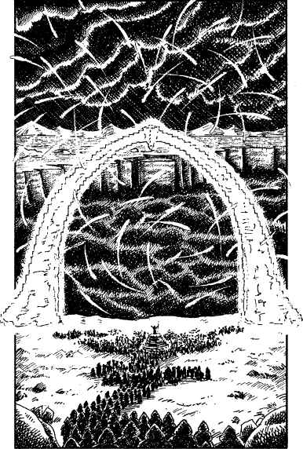

250
For three miles you trek stolidly through the hills towards a deep magenta glow that is bathing the horizon. Then as you round a knoll of rock shaped like an accusing skeletal finger, you are confronted by a spectacle which leaves you staring open-mouthed with awe and horror.
An expanse of dead land, littered with cracked and shattered rocks, slopes down to the edge of an immense chasm that stretches more than a mile from rim to rim. It is the Maakengorge. Hordes of screeching Vortexi ride a violent electrical storm which rages in the clouds above this vast abyss, and the earth shudders in echoing response to the booming thunder. Near the rim of the chasm there stands a towering arch, hewn of stone, that shimmers with such a supernatural brilliance that you cannot fully focus upon it. Peering closer you see before the arch an elaborate, multi-tiered dais constructed entirely of crystal. Around it kneel hundreds of acolytes who are chanting devoutly. Their dreary voices add to the dreadful noise.

You follow the procession as it winds its way towards the dais and soon you see that a solitary figure is standing upon its uppermost tier. He faces the shimmering arch, his hands outstretched, and with every movement of his fingers there is a subtle shift in the spectrum of colours within the angry clouds above. It is as if he is manipulating the storm as a conductor would an orchestra. With a grand sweep of his arms he calms the turbulent sky; then he turns to face his kneeling congregation.
If you have ever been to Kaag or Mogaruith, turn to 224.
If you have never been to these city-fortresses, turn to 295.